Content Outline
- 1 The Great Divide of Data
- 1.1 Fragmented Analytical Planes: Warehouses and Lakes
- 2 Domain Ownership: Logical Architecture
- 2.1 Domain-Oriented Data and Compute
- 3 Data as a Product
- 3.1 The Role of the Domain Data Product Owner
- 4 Data Product as the Architectural Quantum
- 4.1 Structural Components: Code, Data, and Infrastructure
- 5 Self-Serve Data Platform
- 5.1 A Multi-Plane Data Platform Architecture
- 6 Federated Computational Governance
- 6.1 Computational Policies Embedded in the Mesh
- 7 Logical Architecture of the Data Mesh Approach
1 The Great Divide of Data
The data industry currently suffers from a fundamental friction: the divergence of two data planes—operational and analytical. These planes are integrated yet structurally separate. Operational data serves microservices and transactional needs (e.g., "Create a User"), while analytical data provides temporal, aggregated views for Machine Learning and Business Intelligence. The friction arises from the "labyrinth of data pipelines" (ETL) required to connect these planes, which often becomes fragile and difficult to maintain.
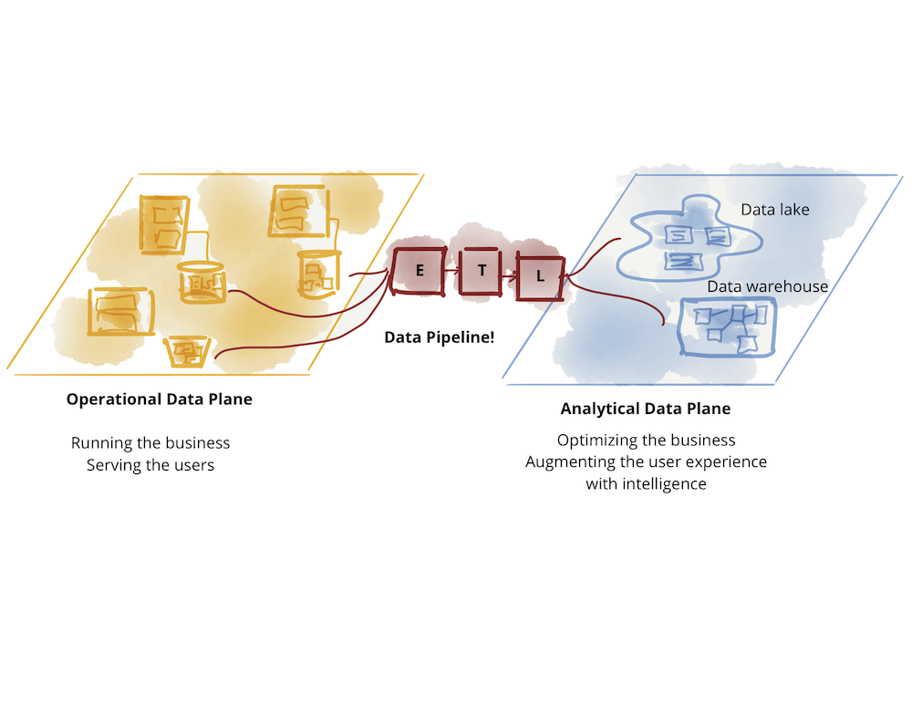
Figure M02.01 illustrates this separation. On the left, the Operational Data Plane focuses on the current state of business transactions. On the right, the Analytical Data Plane stores historical and aggregated data. The "ETL Bridge" in the middle represents the complex and often broken process of syncing these two worlds. Data Mesh recognizes this divide but attempts to invert the model by embedding analytical data back into the domains.
1.1 Fragmented Analytical Planes: Warehouses and Lakes
Even within the analytical plane, we often find further fragmentation. Organizations frequently maintain both Data Warehouses for BI/Analysts and Data Lakes for Data Science. Each stack has its own technology, access patterns, and specialized teams, creating additional silos and complexity.
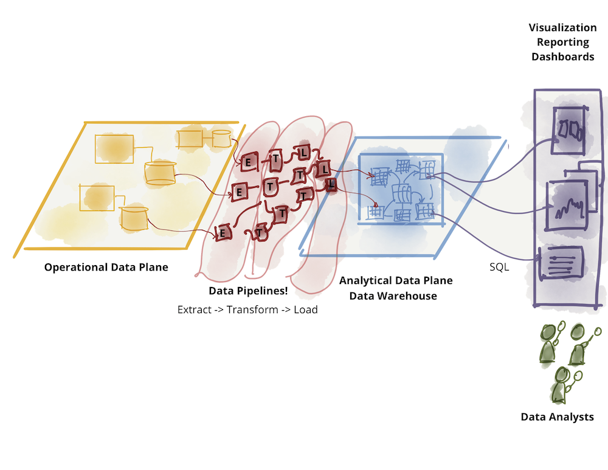
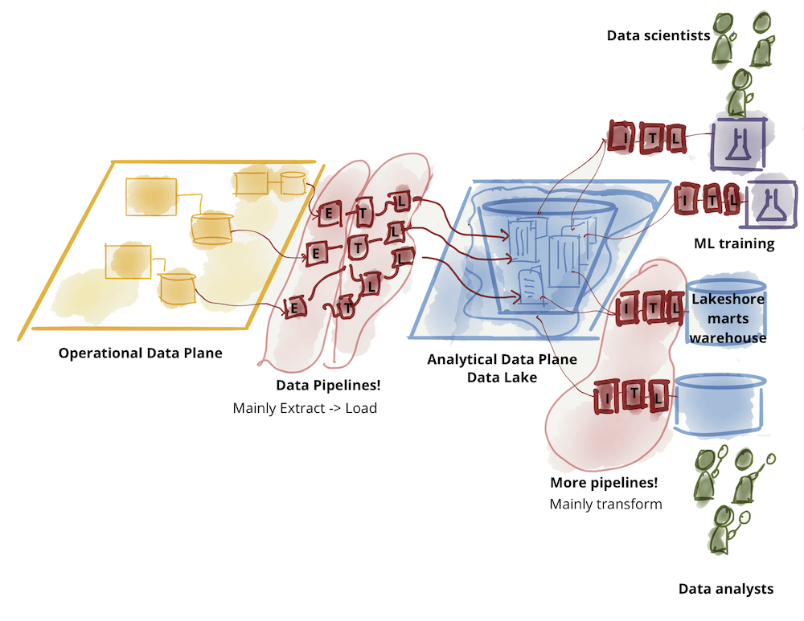
Figures M02.02 and M02.03 show these internal divides. The warehouse (M02.02) is typically optimized for structured SQL queries, while the lake (M02.03) handles raw, unstructured data. Data Mesh aims to unify these analytical needs by focusing on the domain meaning rather than the underlying storage technology.
2 Domain Ownership: Logical Architecture
To support scale and continuous change, Data Mesh decentralizes ownership to the organizational units closest to the data. It follows the business domains as the axis of decomposition, localizing the impact of any change within a domain's bounded context.
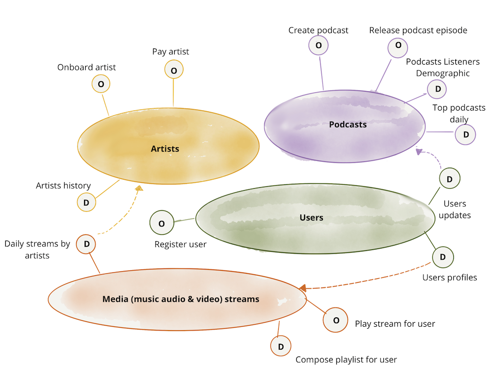
Figure M02.04 illustrates the organizational shift. Instead of a centralized platform, data ownership is distributed across domains like Podcasts, Artists, and Users, each managing their own data lifecycle.
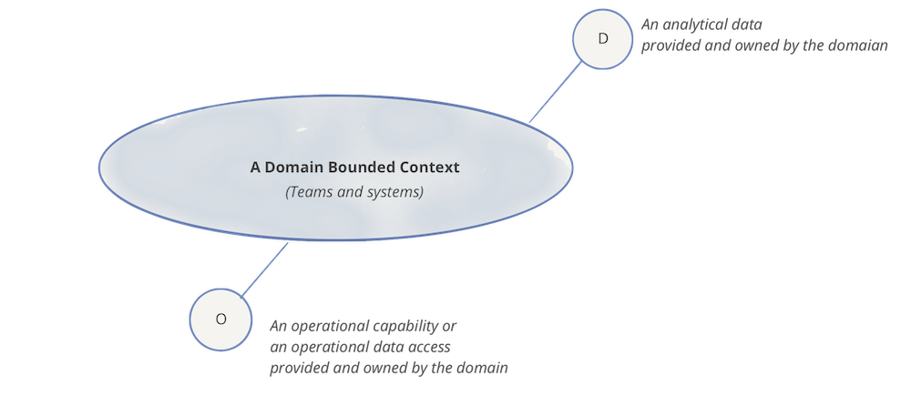
Figure M02.05 introduces the logical symbol for a domain. It is represented as a hexagon that exposes two types of endpoints: Operational APIs (for transactional work) and Analytical Data Endpoints (for historical and temporal analysis). This ensures the domain is responsible for the full lifecycle of its information.
2.1 Domain-Oriented Data and Compute
In this model, a domain (e.g., "Podcasts") owns its operational systems and serves its own analytical data products. This avoids the central bottleneck of a monolithic platform team.
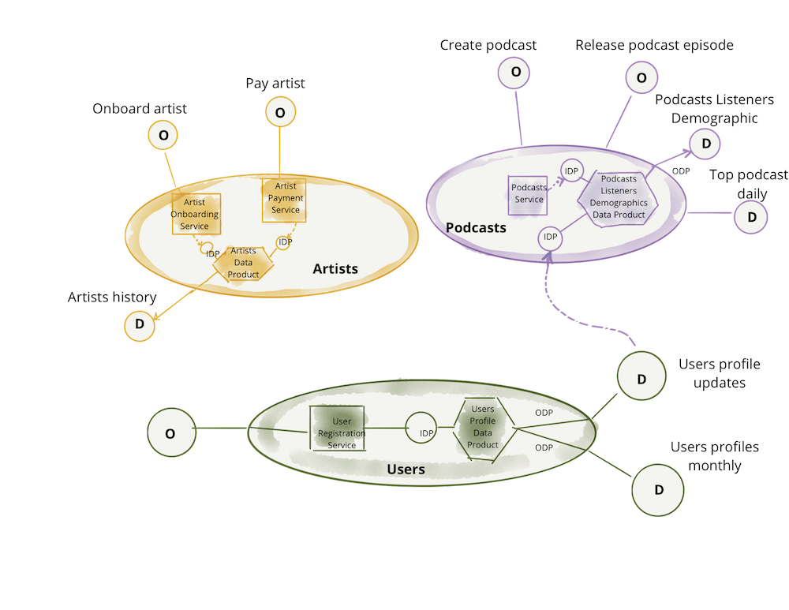
Figure M02.06 demonstrates how domains interact. The "Podcasts" domain consumes analytical data from the "Users" domain to create a new, higher-order data product: "Podcast listeners demographics." Each domain maintains autonomy in its deployment and release while contributing to the overall mesh.
3 Data as a Product
Decentralization alone risks creating "dark data" silos. To prevent this, analytical data must be treated as a product, and consumers as customers. This shifts the accountability for data quality upstream to the source domain.
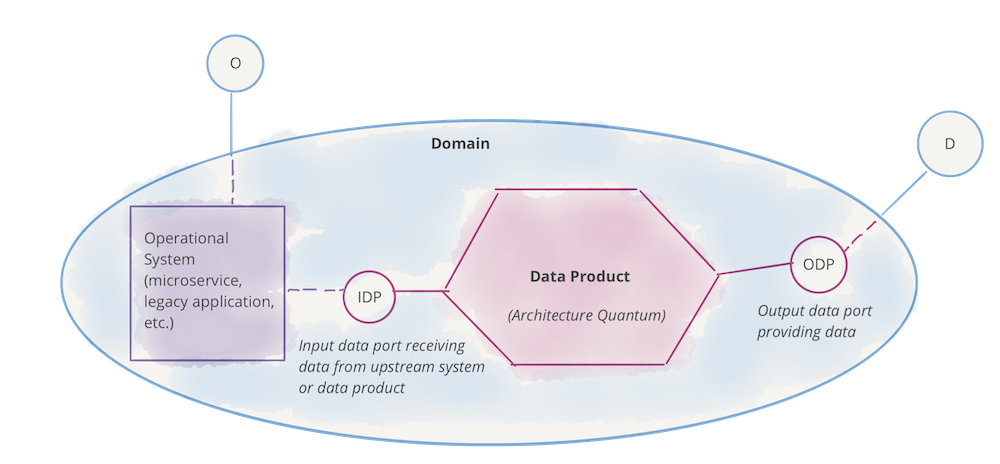
Figure M02.07 shows the internal structure of a domain. The Operational System feeds the Data Product, which is then exposed to the rest of the organization. This separation allows the internal database of a microservice to change without breaking downstream analytical consumers, as long as the data product's public contract is maintained.
3.1 The Role of the Domain Data Product Owner
Every data product is managed by a Domain Data Product Owner. This role is responsible for objective success measures: data quality, decreased lead time for consumption, and user satisfaction.
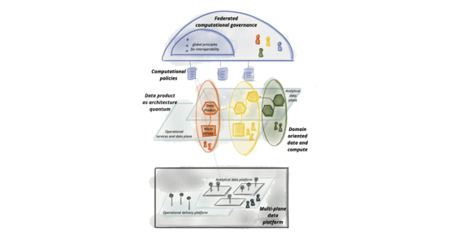
Figure M02.08 highlights that these data products are not just "tables" but autonomous nodes. The product owner ensures that the data is discoverable, secure, and trustworthy, using "native methods" (like SQL or Spark) that analysts and scientists expect.
4 Data Product as the Architectural Quantum
The architectural quantum is the smallest unit of architecture that can be independently deployed. In Data Mesh, this is the Data Product. It is a cohesive unit that bundles everything needed to fulfill its purpose.
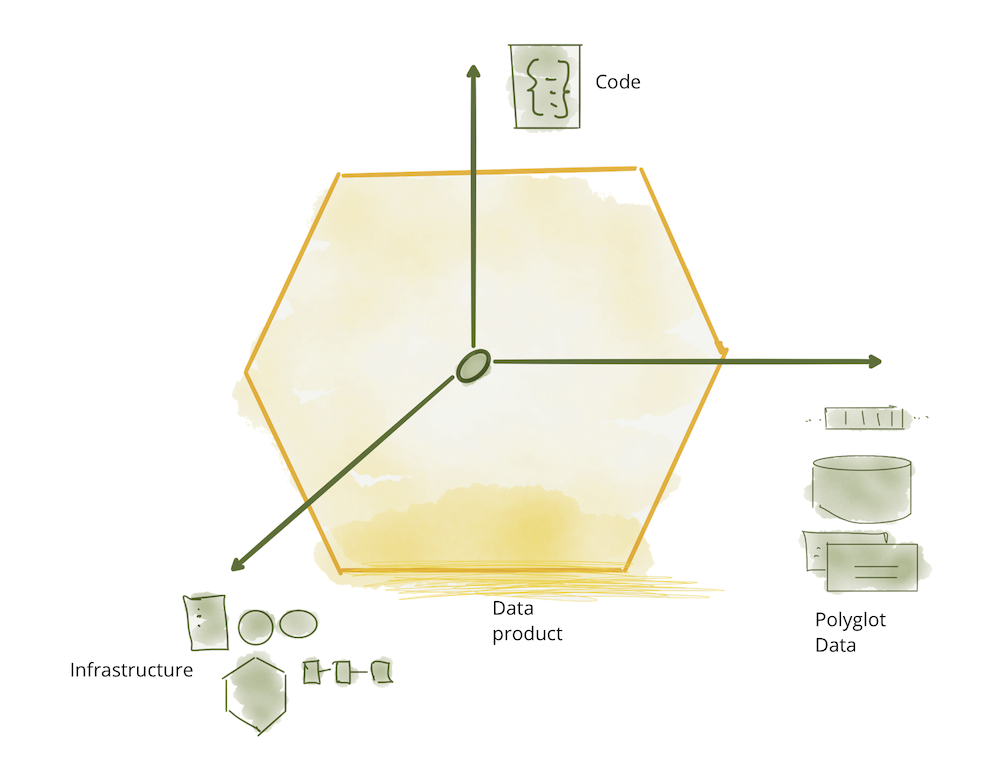
Figure M02.09 visualizes the three components of this quantum:
- Code: Includes transformation pipelines, data access APIs, and policy enforcement logic (e.g., access control).
- Data & Metadata: The actual analytical data (events, batches, tables) plus semantic definitions, quality metrics, and lineage.
- Infrastructure: The underlying resources (storage, compute) required to run the code and host the data.
4.1 Structural Components: Code, Data, and Infrastructure
By bundling these components, the Data Product becomes autonomous and independently evolvable. The domain team has full control over the internal implementation while providing a stable, versioned interface to the mesh.
5 Self-Serve Data Platform
To enable domain autonomy without requiring every team to be infrastructure experts, a self-serve data platform abstracts the complexity of provisioning and managing data products.
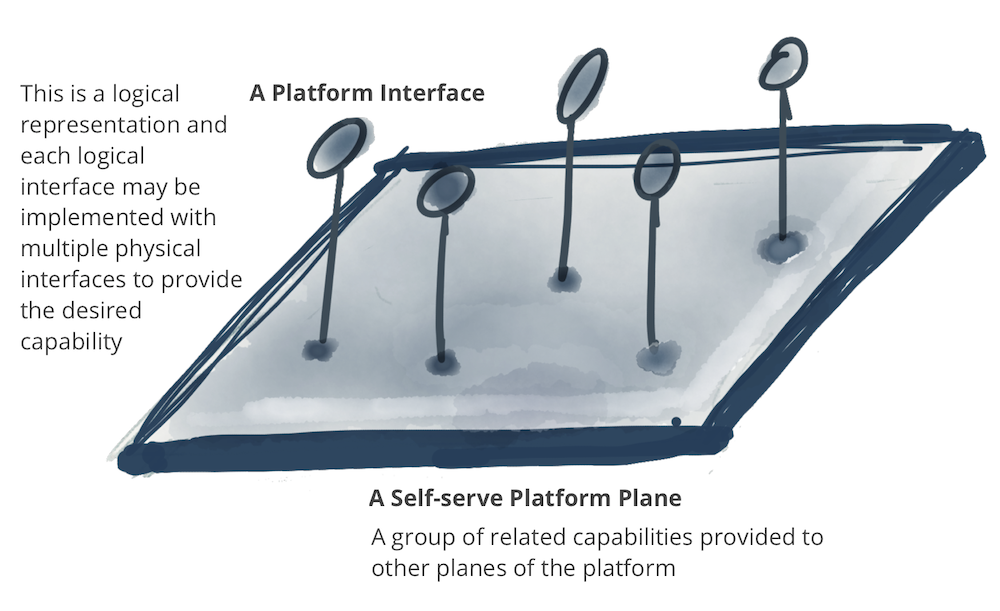
Figure M02.10 shows the platform as a horizontal plane that provides services to the data product nodes. It handles the "heavy lifting" of the underlying technology, allowing domain teams to focus on data logic.
5.1 A Multi-Plane Data Platform Architecture
The platform is organized into three distinct planes:
- Data Infrastructure Plane: Handles low-level resources like distributed storage and query engines (e.g., S3, BigQuery, Spark).
- Data Product Experience Plane: Provides declarative interfaces for developers to manage the lifecycle of a data product (e.g., "Create a new product with these quality rules").
- Mesh Supervision Plane: Provides mesh-level capabilities like global discovery (catalog), data lineage, and cross-product correlation.
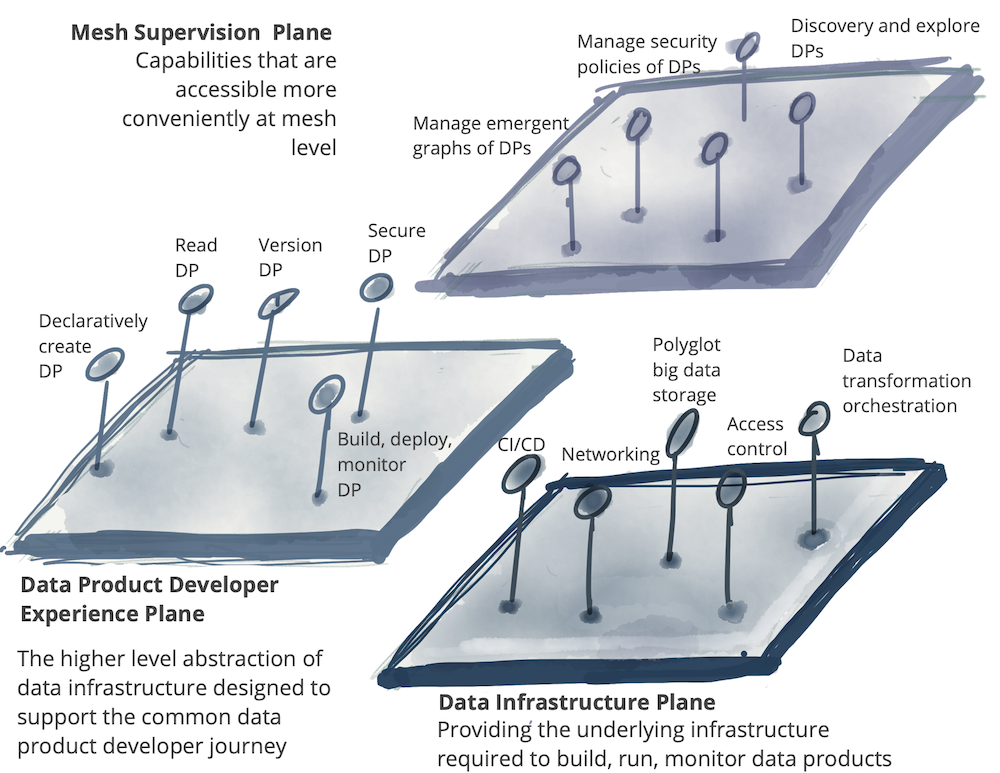
Figure M02.11 visualizes these layers. The platform sits below the data products, providing a "self-serve" interface that masks the complexity of the big data technology stack.
6 Federated Computational Governance
Data Mesh requires a model that balances domain autonomy with global interoperability. This is achieved through a federation of domain and platform owners who define global rules while leaving local concerns to the domains.
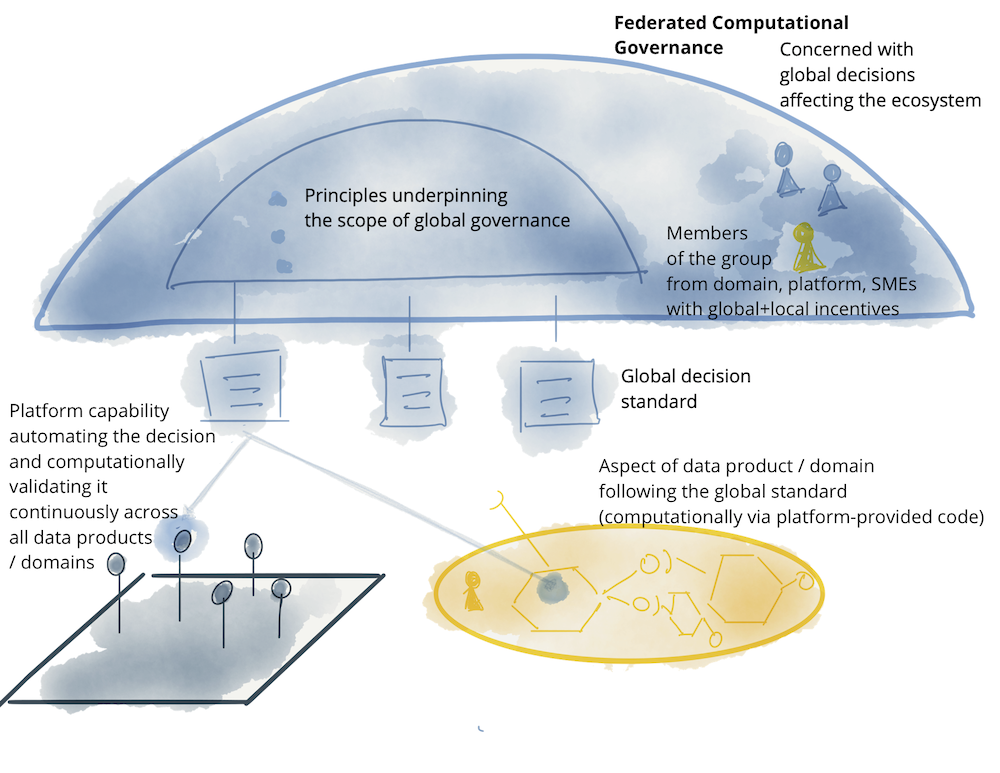
Figure M02.12 represents this model. Instead of a central "gatekeeper," we have a Federated Team that sets global standards. These standards are then implemented as code and automatically enforced by the platform.
6.1 Computational Policies Embedded in the Mesh
Policies such as access control, security, and data quality are "baked into" the infrastructure. This computational governance ensures that every data product automatically follows global rules (e.g., GDPR compliance) from the moment of creation.
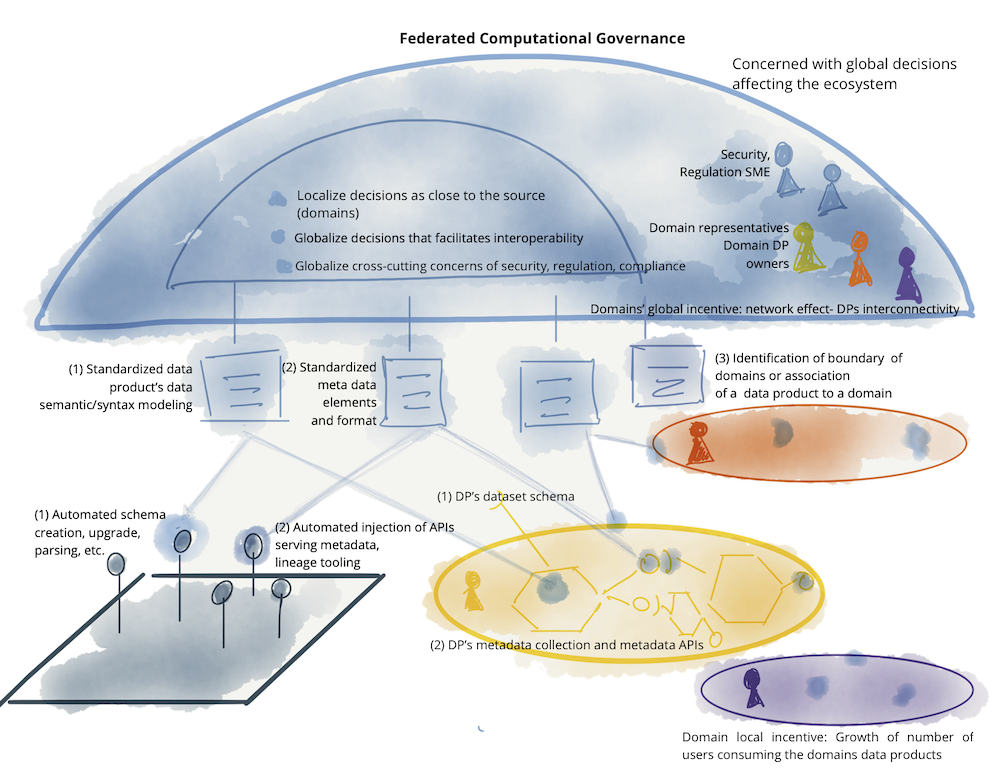
Figure M02.13 shows how these elements interact. The focus shifts from manual oversight to automated enforcement, where global standards (like common metadata or identity) are applied programmatically across all domains.
7 Logical Architecture of the Data Mesh Approach
The final architecture brings analytical and operational data closer together within the domain. It creates a mesh of autonomous nodes that are discoverable, secure, and interoperable.
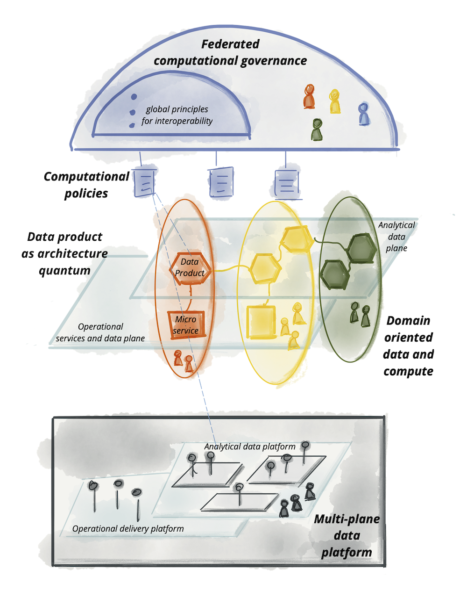
Figure M02.14 is the "big picture." It shows various domains (Podcasts, Artists, Users) each containing their own microservices and data products. These nodes are connected via the self-serve platform and governed by federated policies, forming a cohesive ecosystem that scales horizontally.
Source: Data Mesh Principles and Logical Architecture (Martin Fowler)
Key takeaways
- Data Mesh bridges the "great divide" by embedding analytical data within business domains.
- Domain ownership decentralizes accountability to those with the best business context.
- Data products are the "architectural quantum," bundling code, data, and infrastructure.
- A multi-plane platform provides the "self-serve" interface needed to scale domain autonomy.
- Federated governance uses automated computational policies to ensure global interoperability.